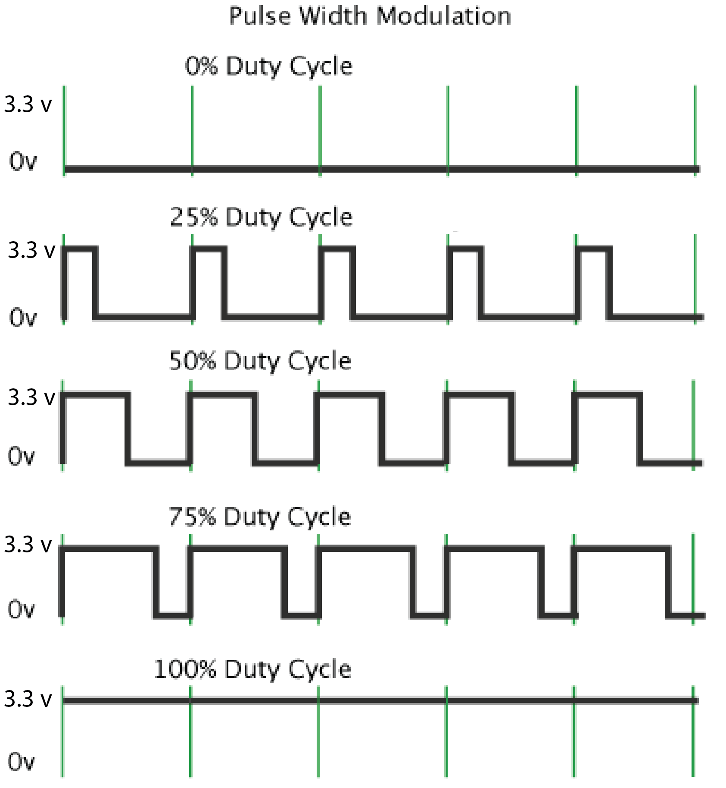

6.810 Engineering Interactive Technologies (fall 2021)
Pset3: Sensing Multi-Touch Input
In this problem set, you will write code to sense the touch signals from your multi-touch pad. At the end of this problem set, you will be able to see when a user is touching.
Steps:
- Generate the appropriate PWM signal for the sender pin. Send the PWM signal from the sender pin to the multiplexer.
- Configure the Multiplexer to select the right output channel to forward the PWM signal to the appropriate column of your multi-touch pad.
- Read data from the external ADC pins via Serial Peripheral Interface (SPI) communication.
- Iterate over each column and row to read the signals and plot them on the serial plotter.
Skeleton Code
Start by downloading the skeleton code for the PSet2 from here.
(1) Generate the PWM signal for the sender pin
As you can see in the circuit schematic, the first thing we need to do in code is to generate a PWM signal from the sender pin. This PWM signal then goes into the multiplexer and so on.

Pulse Width Modulation
Remember from lab3, that PWM is a technique that can be used to create voltages in-between 0V and 3.3V. In lab3 we used PWM to dim our display since the amount of voltage determines how bright the display is, here we will use PWM to turn on & off the voltage row-by-row for our multi-touch pad sender pins, so that we are scanning through the pad.
We can generate voltages in-between 0V and 3.3V by switching the signal between on and off.

Our PWM Signal
The signal that we are generating for the sender pin is 4 MHz, 25% Duty Cycle.
We will spare you the details why exactly we need this PWM signal since this falls under more advanced electronics.
Open the skeleton code and create the PWM signal in the setupPWM() function by following the steps below.
Configuring the PWM Signal
First, you need to tell Arduino how you want to configure the PWM signal using the ledcSetup() function.
You may be confused about the function name since we are not using LEDs. While the LED control (LEDC) peripheral is primarily designed to control the intensity of LEDs, it can also be used to generate PWM signals for other purposes.
ledcSetup(channel_number, frequency, duty_resolution)
Channel Number: The LEDC peripheral has 16 channels which can generate independent waveforms (note that these are NOT pin numbers on the ESP, but internal channels inside the ESP). The channel numbers range from 0-15. For our purposes, you can pick any channel you like.
Frequency: The PWM frequency that we use is 4MHz as mentioned above. The function takes the frequency in Hz, so you need to do the conversion and then enter that number into the parameter.
Duty Resolution: The duty cycle is defined as the percentage of the period for which the signal is "high". For example, a signal that has a 50% duty cycle is high for one half of the period and low for the other half (see image again above). In our case, we want to use a duty cycle of 25%. So how is this represented in the duty resolution? The duty resolution defines how many different duty cycles you can choose from when you generate the PWM signal from a pin (starting at 0%). The duty resolution is defined as a number of bits, i.e. if you need 16 different duty resolutions your duty resolution is 4 bit. If your duty cycle is 4bit (16 values), you can choose from 0%, 6.25%, 12.5%, 18.75%, 25%, 31.25%.... (100%/16 values) for your duty cycles. So this duty resolution would work since 25% is included. The duty resolution can be anywhere from 1-16 bits. What is the smallest duty resolution that still enables you to create a 25% duty cycle? Submit your answer (question 1) in the Google Form link below.
Reason why we want to use a small duty resolution: The above should have given you everything you need to fill out the function, but let's reflect a bit more on why we have to be careful about choosing a small duty resolution that works for a 25% duty cycle. The reason you should use a small duty resolution is that it directly affects the PWM frequencies that are available to use. The higher the duty resolution (i.e. the more bit), the lower the available PWM frequencies. In our case, we need to generate a high-frequency signal for the multi-touch sensing of 4MHz, so we have to keep the duty resolution small. To compute which frequencies are still possible with a chosen duty resolution, we can use the following formula:
max available frequency = microcontroller clock cyle / 2^bits from the duty resolution
//microcontroller clock cycle divided by 2 to the power of bits from the duty resolution
The ESP's default clock is 80 MHz.
If we need at least 4MHz for the frequency, what are the possible duty resolutions we could use that would still enable a frequency of 4MHz or more?
Submit your answer (question 2) in the Google Form link below.
Specifying the Output Pin of the PWM Signal
Now that you specified the signal, you need to specify on which pin number the signal should appear. Remember that this is the pin that goes from the ESP to the multiplexer's SIG pin. The PWM channel number is the same as above.
ledcAttachPin(GPIO_PIN, channel_number)
Generating the PWM Signal on the Output Pin
Finally, you need to generate the actual PWM signal, which you had previously defined with the ledcSetup() function.
ledcWrite(channel_number, duty_cycle):
The PWM channel number is the same as above.
The duty cycle is different from the duty resolution and explained below:
Duty Cycle: In the duty cycle parameter, you tell the ledcWrite() function, which of the duty cycles from your duty resolution should be used. Continuing the example from above, let's assume you chose 4 bits, which gives you 16 values ranging from 6.25%, 12.5%, 18.75%, 25%, 31.25% .... 100%, then your duty cycle parameter is the index of the duty cycle you want to use. For instance, using 2 for the duty cycle parameter would give you 18.75% for the duty cycle. Based on the duty resolution you chose for question number 1, choose the correct duty cycle parameter. Submit your answer (question 3) in the Google Form link down below and then use it as the parameter in the function.
Submit your answers to 3 questions here (Google Form link).
Once you submitted all your answers with the google form, feel free to reach out on slack to have your answers confirmed before you move on since they may impact how well your code will work in the rest of the pset2.
Testing if you are generating the right signal
If you want to test if you are generating the correct signal, we will have an oscilloscope ready at the IDC. If you know how to use an oscilloscope, you can come in and use it yourself outside the OH. If you don't know how to use it, please come to an OH. You can also go ahead and do the rest of the coding first before coming in.

(2) Configuring the Multiplexer to send the PWM signal to the right electrode column
Now that you are generating the PWM signal at the sender pin on the ESP that is connected to the multiplexer, we will write up the function that determines to which pin (i.e. electrode column) the multiplexer will send the signal as output.

How to redirect the signal to a desired channel?: The multiplexer receives the PWM signal on the input pin (SIG). It then needs to determine to which of the output pins (C0-C15) the signal should be forwarded to. To do this, it uses the S0 - S3 pins to create the address that determines which output pin (electrode column) the signal should be send to. Why four pins? The multiplexer expects a binary signal. For instance, sending 0,0,0,0 to S0-S3 results in the output pin C0, vs. 0,1,1,0 sends the signal to C6. Let's implement this in the next section.
Setup Address Pins (S0-S3) as Digital Pins: First, check which GPIO pin numbers you used for the multiplexer's S0 - S3 pins. Create the digital pins in your Arduino code and set the correct PinMode.
Compute the Bit Values for the Address Pins: Fill out the "selectChannelOut(int channel)" function in the skeleton code. The function takes as input an 'int' for the channel number (0-8, since we have 9 sender lines in our 8x9 multi-touch pad) and then assigns the correct bit values to the 4 select pins (S0 - S3). Use 'digitalWrite' to write the correct value to each of the S0-S3 pins after you determined if they should be 0 or 1.
Testing the Channel Select Function: You can test if your channel selection function works properly in the following way: First, choose an output pin for testing from the C0-C8 output pins and set it in your function. Next, use a multimeter to measure if the channel actually receives any voltage. Note that this is different than measuring resistance. Therefore, you need to set the multimeter into 'V' mode for measuring voltage, and then measure on the output pin and on GND. You should see 3.3V in the display. If you see 0, no voltage is applied and you need to debug your code to figure out why the pin is not receiving the signal.
Note that in the code, there is a delay function. You may need to adjust the delay slightly depending on the amount of capacitive coupling your specific circuit layout has, which interferes and slows down the signal assign (e.g. digitalWrite()) slightly and can result in undefined behavior. The delay allows the multiplexer gets stable select pin values and assign correct output channel. Usually a delay of 2 - 5 milliseconds should be sufficient enough.
(3) Receiving Signals via SPI Communication
Remmber from pset1 that we had wired up an additional ADC converter (MCP3008 chip) to get cleaner signals from our multi-touch pad, i.e. the MCP3008 chip converts our analog touch signals better than the ESP GPIO pins would be able to do. We had also discussed that the MCP3008 chip communicates with the ESP via the Serial Peripheral Interface (SPI). To read the signals via SPI, you will have to do the following steps.
Install MCP3008 Library: Download and install the MCP3008 library by opening the Arduino IDE and going to Sketch -> Include Library -> Manage Libraries and search for the MCP3008 library. Restart your Arduino IDE after you installed the library.

Look at MCP3008 Example Code: Go to File -> Examples and look at the bottom where it says 'Examples from Custom Libraries' to find example code that shows how to use the MCP3008 library. We recommend you look at the 'simpletest' example.

Include Library: As you can see in the simpletest example, you need to first include the library on top in the skeleton code.
Instantiate Library: After this, you need to declare an object of the library.
Open Communication Channel: Next, you need to open the SPI communication channel with 'begin()'' in the setup function. However, we do not want to use the empty contructor begin() but instead also provide the pin numbers. You can see an example of this further down in the 'simpletest' example in the code that is commented out. Fill the pin numbers in according to your wiring.
Start reading signals: Once the channel is open, you can read the signal from one of the input channels CH0-CH7 using the 'readADC(channelnumber)'' function (see the 'simpletest' example code). If you serial print the result, you should see your analog signal coming through.
Testing your Code: You can check if the SPI communication between the ESP and the MPC chip works properly by doing the following: Connect a 3.3V output pin from the ESP to one of the MCP CH input channels and plot the result on the Serial Plotter.
You should see a signal there around 1000. If you see '0' nothing is coming through and you either wired up the MPC chip incorrectly or you are reading from the wrong channel.
(4) Injecting Signal and Reading Signals in the correct order
Now that you have code for telling your multiplexer to send the PWM signal to a specific electrode column, and you code for your ADC chip to read the signal from a specific electrode row, you are ready to write the meta-level code that tells your program when to inject into which electrode column and when to read which row.
Putting your Code in loop(): Since we will continuously read data from our multi-touch pad, your code should be in the 'loop()' function.
Inject Column #1, Read all Rows, Inject Column #2, Read all Rows...: Your code needs to first send a signal through column #1, then read each row of the multi-touch pad one after another (rows #1-#9), and then continues to inject the signal into column #2, reads again row #1-#9 and so on.
Averaging Read Signals: When reading the signal from a specific row, it helps to sample multiple times (e.g., execute read() 20 times and average them together) to get a more accurate and smooth signal.
Print Data to Serial Monitor: Serial print the data in the format: columm0, row0val, row1val, row2val... A sample serial output could look like:
0,50,83,58,79,108,75,82,54 //columm0, row0val, row1val, row2val
1,55,92,120,84,63,61,88,53 //columm1, row0val, row1val, row2val
2,61,64,73,66,92,78,67,57
3,65,117,116,84,48,81,91,71
4,65,128,116,54,76,81,88,59
5,61,86,66,54,114,78,64,64
6,59,86,120,83,85,75,93,63
7,56,86,116,70,72,83,80,64
8,23,82,74,68,98,64,62,52
...
Checking Result in Serial Plotter: If you open up the Serial Plotter, it should look like the image on the left when the multi-touch pad is not touched, i.e. all values are roughly the same height. The middle shows a start of touching and the right the end of touching.


Upload your Arduino Code
For grading, please upload the following to your google drive student folder:
- the .ino file of your Arduino program
- 2-3 photos showing your assembled circuit with the MPC from different perspectives (include top view + side views)
- a short video showing the circuit working, i.e. show that touching the multi-touch pad produces a different signal than not touching the multi-touch pad. Make sure the Serial monitor and your multitouch pad are both visible at the same time.
Grading
We will give 20 pts in total:
- 5 pts: does your code configure and generate the PWM signal correctly? Are the answers in the google form correct?
- 5 pts: does your code correctly select the channel on the multiplexer to address the correct column?
- 5 pts: does the ESP communicate with the MCP chip correctly via SPI?
- 5 pts: is the receiver data read and recorded correctly?
//microcontroller clock cycle divided by 2 to the power of bits from the duty resolution